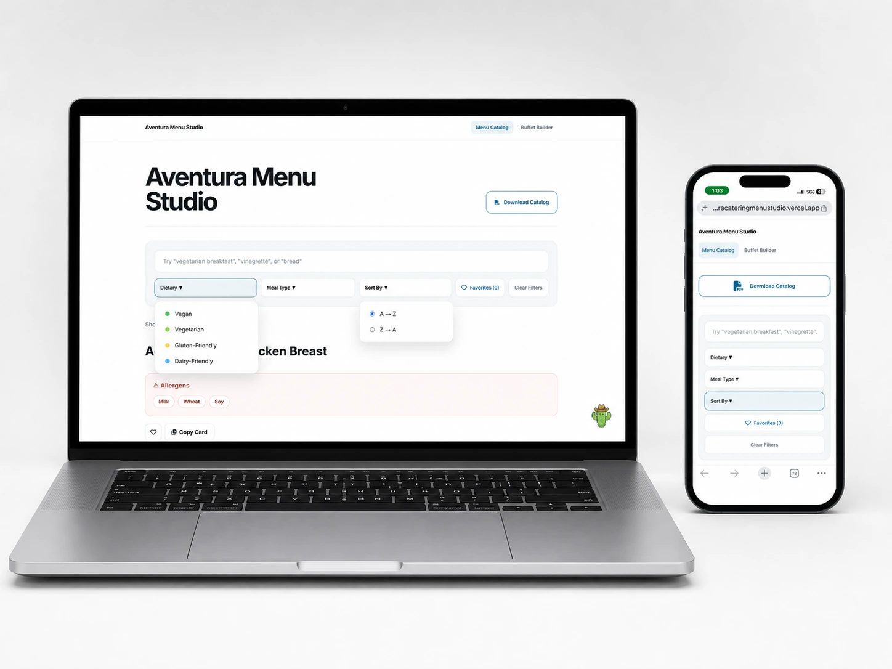
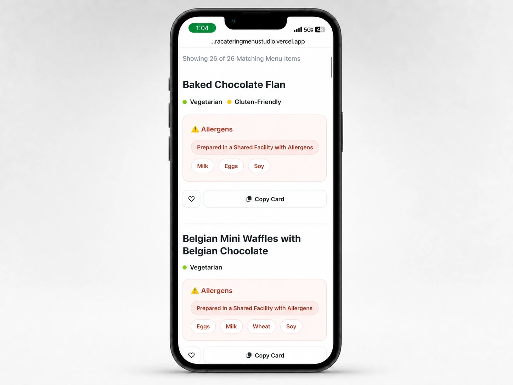

UX Design, Front-End Development & Workflow Automation
Aventura Menu Studio
Designing and developing a searchable menu-management system.
I designed and developed a responsive internal web resource that centralizes more than 744 approved menu items for Aventura’s Marketing, Sales, Culinary, and Design teams. The Menu Studio makes it faster and easier to locate approved descriptions, dietary labels, and allergen information for menus, buffet cards, proposals, and digital signage.
Explore the live Menu Studio ↗- Role
- Designer and developer
- Project type
- Internal web application
- Responsibilities
- UX, interface design, front-end development, testing, and deployment


The purpose
One resource.
Four teams.
Menu content supports many different tasks, from sales proposals to buffet cards and digital displays. I brought approved menu descriptions, dietary labels, and allergen information into one searchable interface for the people creating those materials.
The experience
Find the right information, faster.
The interface combines search with dietary and meal-type filters so users can narrow the catalog to the items relevant to their work.
The same resource adapts to desktop and mobile, keeping menu information accessible across devices.
Responsive interface design
Menu details.
Made for mobile.
I optimized the Menu Studio and search-results experience for smaller screens, giving item names, dietary labels, and allergen information a clear hierarchy.
- Readable results — distinct item names and dietary labels.
- Visible allergen information — dedicated panels with a shared-facility disclaimer.
- Practical controls — favorites and a Copy Card action alongside each result.


Technology & development
The interface and the system behind it.
Built using HTML/CSS, JavaScript, and JSON to create a searchable, responsive Menu Studio, supported by a menu-data workflow and version-controlled deployments.
| Technology | How I used it |
|---|---|
| HTML/CSS | Website structure, responsive layout, and styling. |
| JavaScript | Search, filtering, and interactive features. |
| JSON | Structured menu data for the website. |
| SharePoint | Source database for 744+ approved menu items. |
| Power Apps / automation | Menu and allergen updates within the publishing workflow. |
| GitHub | Code development and version control. |
| Vercel | Website hosting and live deployments. |
Visual workflow
From approved data to a usable resource.
The publishing workflow connects the source menu information with the searchable website.
- 01 / SourceSharePoint database
Approved menu records.
- 02 / UpdatePower Apps / automation
Menu and allergen updates.
- 03 / StructureJSON data
Menu content organized for the site.
- 04 / VersionGitHub
Code and data version control.
- 05 / DeployVercel
Hosting and live deployments.
- 06 / UseLive Menu Studio
Searchable access for the teams.
Created as part of my role with Aventura Catering / Aramark at Phoenix Convention Center.
The result
Creative design meets everyday operations.
A central resource for 744+ approved menu items that brings interface design, front-end development, and workflow automation together to support the teams using the content.
Explore the live Menu Studio ↗